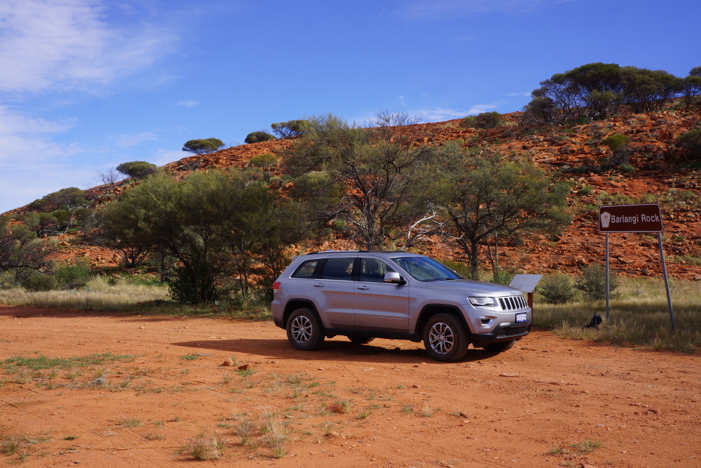
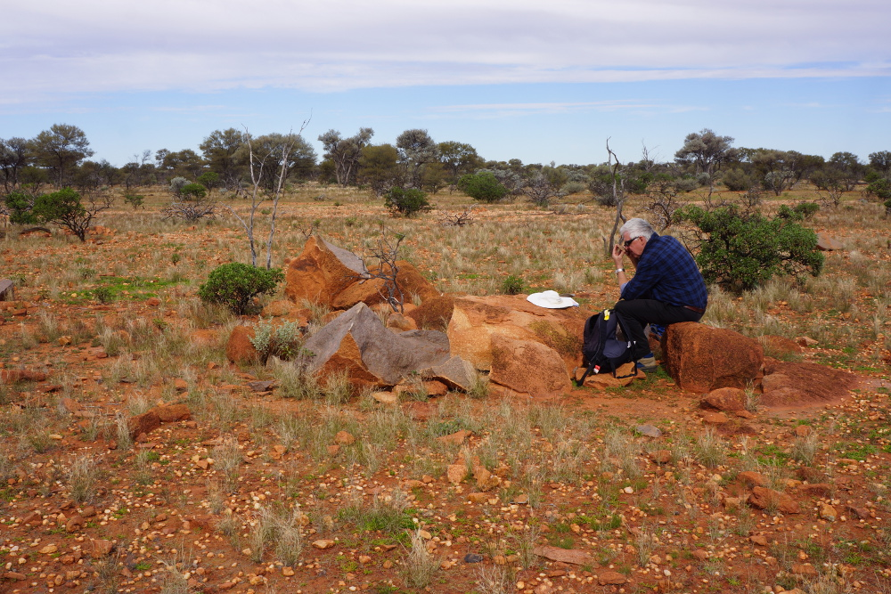
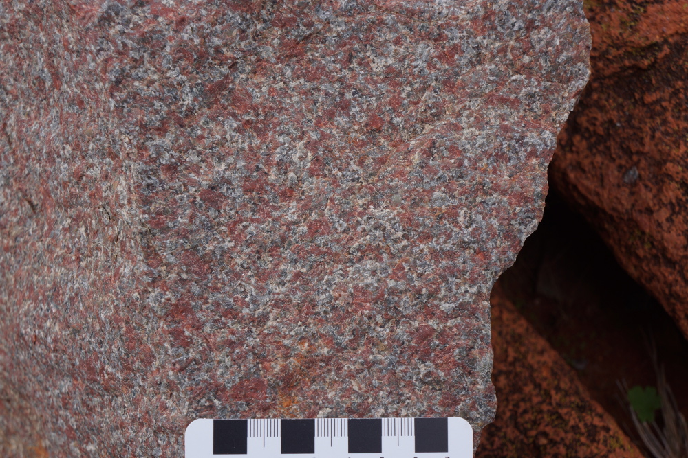
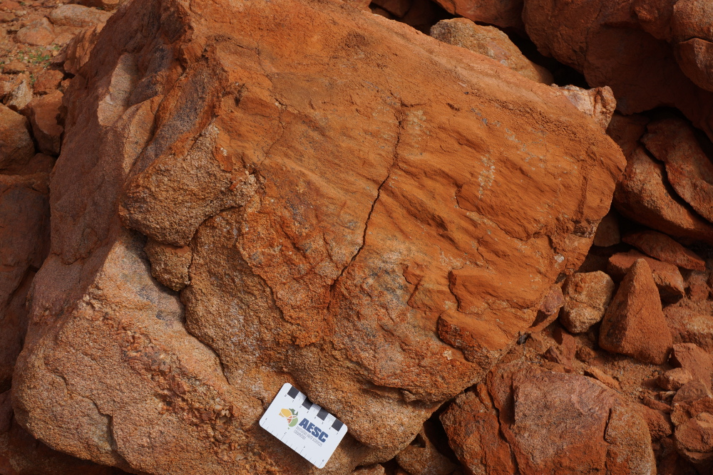
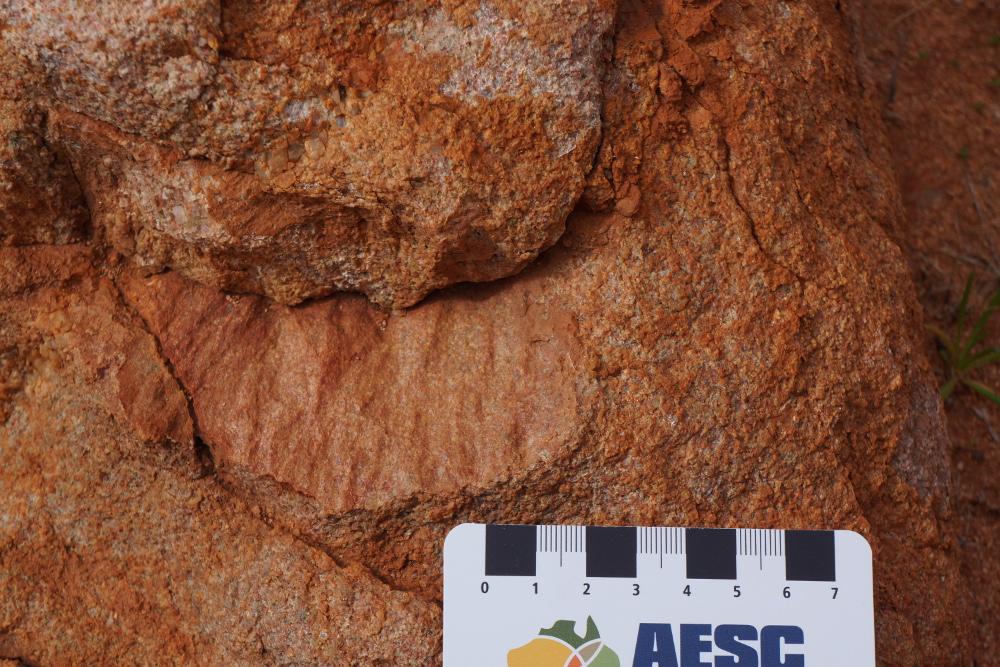
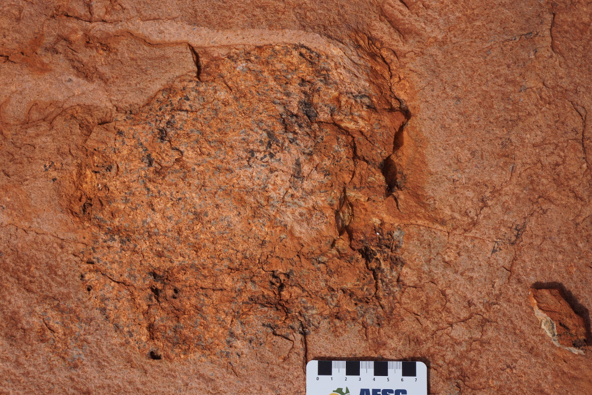
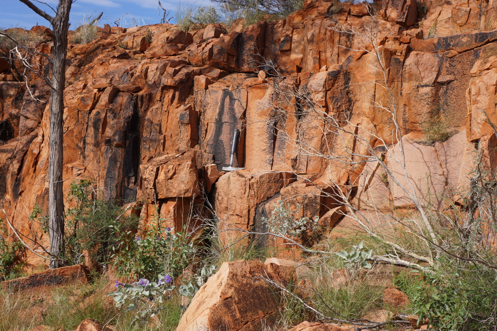
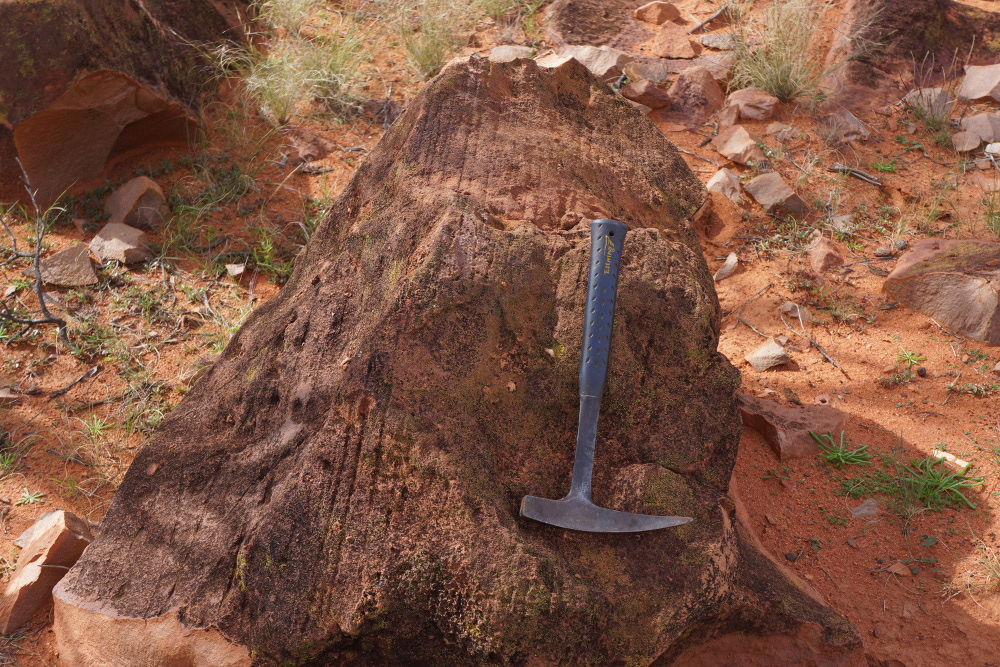
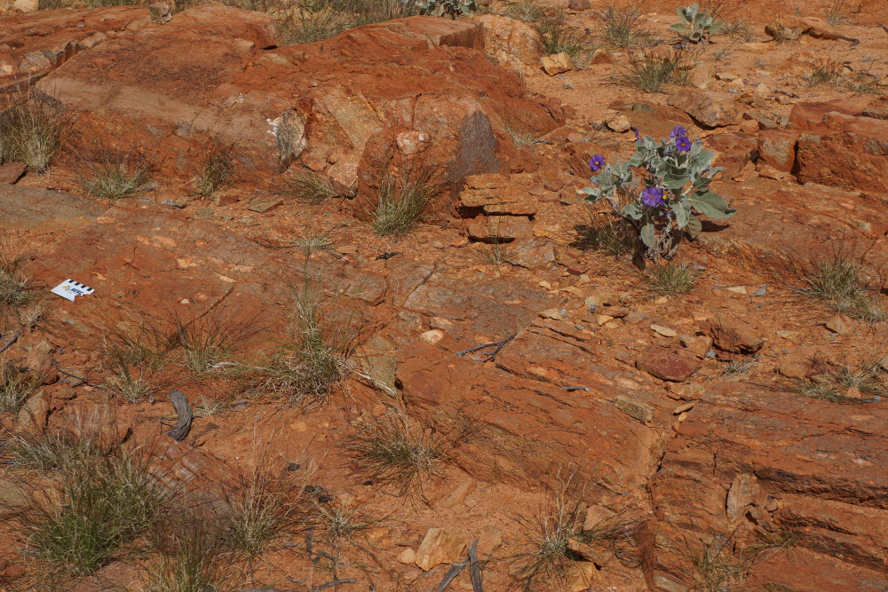
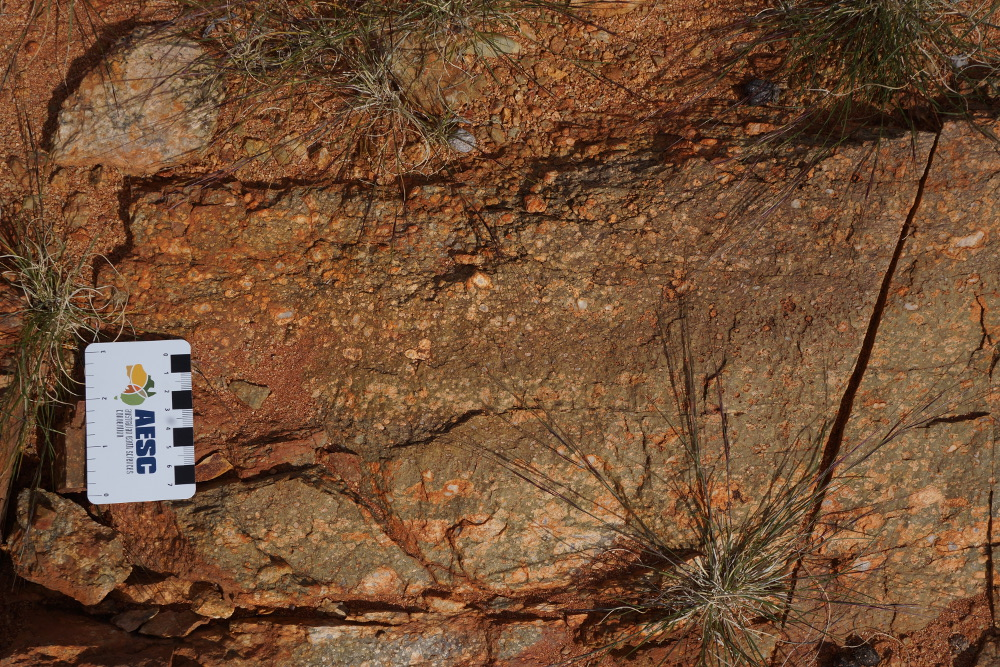

The Yarrabubba Impact Structure
Under Construction
The Yarrabubba impact structure is located in the central west region of Western Australia. It is located at 118 deg 50 min east and 27 deg 11 min south on the Sandstone SG50-16 1:250 000 mapsheet and the Nowthanna 2643 1:100 000 mapsheet. The centre of the impact structure outcrops as the Barlangi Granophyre on the Sandstone to Meekatharra Road. The structure was first recognised as a possible impact structure in samples collected by S I Williams and described by W G Libby (1979). The information summarised below has been derived from Macdonald et al (2003), Wyche (2008) and Bunting (2012).
In 2012, the Meteoritical Society hosted a field excursion to some of the WA craters and impact sites, and the extract for the Yarrabubba visit can be found here.

Location map for the Yarrabubba Impact Structure (source 1:250 000 topographic map series)

Barlangi Rock is composed of the Berlangi Granophyre which represents a melt sheet (rock turned molten by the heat of the impact) created by the Yarrabubba Impact (Photo G Boxer June 2014).

View from north looking south towards Barlangi Rock (Photo G Boxer June 2014).
The identification of the structure was the result of the recognition of shock metamorphic features in a thin section of Yarrabubba Granite collected during regional mapping by Steve Libby in 1979. Later follow-up by Macdonald et al (2003) recognised shatter cones, psuedotachylites (see images below) and that the Barlangi Granophyre was an impact melt sheet. The recent 1:100 000 geological map sheet identifies the location of the Yarrabubba Impact Structure(see below).
Yarrabubba Granite
Outcrop of Yarrabubba Granite at Locality 3b (Bunting 2012) (Photo G Boxer June 2014).
Close-up photo of Yarrabubba Granite at Locality 3b (Bunting 2012) showing the pink potassium feldspar caused by iron oxide dusting in the crystals. (Photo G Boxer June 2014).
Shatter cones in Yarrabubba Granite at Locality 2a (Bunting 2012) (Photo G Boxer June 2014).
Shatter cones on the joint surface in Yarrabubba Granite near Locality 2a (Bunting 2012) (Photo G Boxer June 2014).
Barlangi Granophyre

Granite inclusion in Barlangi Granophyre near the summit of Berlangi Rock (Photo G Boxer June 2014).
Columnar jointing in Barlangi Granophyre on the northern side of Berlangi Rock - cooling columns or later structural overprint? (Photo G Boxer June 2014).
Layering in the Barlangi Granophyre near Locality 3a (Bunting 2012) (Photo G Boxer June 2014).
Psudotachylites
Psuedotachylite dyke cutting Yarrabubba Granite near Locality 2b (Bunting 2012) (Photo G Boxer June 2014).
Detail of psuedotachylite dyke cutting Yarrabubba Granite near Locality 2b (Bunting 2012) (Photo G Boxer June 2014).
Geology and Geophysics

Geological map of the Yarrabubba Impact (GSWA Nowthanna 2643 map sheet)

Total Magnetic Intensity Image over the Yarrabubba Impact Structure

First Vertical Derivative (1VD) Magnetic Image over the Yarrabubba Impact Structure

Landsat 8 Image, bands 4, 3 and 2, pansharpened with band 8, of the Yarrabubba Impact

Landsat 8 Image, bands 6, 4 and 2, pansharpened with band 8, of the Yarrabubba Impact
Photos of the area were taken by G Boxer in June 2014. If visiting areas away from the main visitor location site (Bunting's locality 1), please drop in to the Yarrabubba homestead as ask permission.
References
Bunting J. 2012. Yarrabubba Impact Structure, In: Western Australian Impact Craters, Field Excursion, 20-29 August 2012. Excursion Guidebook for the 75th Annual Meeting of the Meteoritical Society, Cairns, Australia, 2012.
Libby W G. 1979. Petrography of 35 Rocks from the Sandstone 1:250,000 Sheet, Geological Survey of Western Australia, Petrology Report No. 1007 (unpublished).
Macdonald F A, Bunting J A and Cina S E. 2003. Yarrabubba - a Large, Deeply Eroded Impact Structure in the Yilgarn Craton, Western Australia. Earth and Planetary Science Letters, vol. 213 (2003), pp. 235-247.
Wyche S. 2008. Kalgoorlie, Youanmi, and Narryer Terranes of the Yilgarn Craton - A Field Guide. Geological Survey of Western Australia, Record 2008/12.
Other Impact Sites of Western Australia
Glikson
Gnargoo
Goat Paddock
Ilkurka
Lennis
Neereno Hill Possible Impact Structure
Piccaninny
Skirmish
Spider
Veveers
Woodliegh